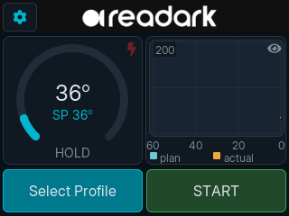
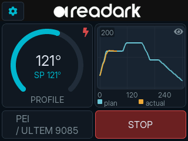

Hits the curve. Holds it.
AnnealX tracks the planned thermal profile to within a degree, automatically. The planned and measured lines overlay on screen in real time — you watch the run, you don't manage it.
AnnealX is a benchtop oven engineered for 3D-printed parts. Pick a material, press start — AnnealX tracks the recipe to within a degree, from a 2 hour PLA cycle to a 20 hour PEEK soak.

AnnealX runs the entire process from a single touchscreen. No phone, no laptop, no app, no account — and nothing to set up before the first run.

Every recipe shipped on the device is sourced from a peer-reviewed paper, a national-lab study, or a manufacturer datasheet, and explicitly cited. Pick a material to inspect the curve and the source it's based on.
—
—
—
━━ measured curve ▮ hold phase ● peak setpoint
Every part of AnnealX is built around one job: hitting the target temperature, then holding it.
AnnealX tracks the planned thermal profile to within a degree, automatically. The planned and measured lines overlay on screen in real time — you watch the run, you don't manage it.
From PLA to PEEK, every pre-loaded profile traces back to a peer-reviewed paper, national-lab study, or manufacturer datasheet. No guesswork, no community folklore — just temperatures and times that have been measured.
Sixteen slots for custom recipes, each up to sixteen stages. Compose ramps and holds directly on the touchscreen. No laptop. No app. No account.
Optional WiFi lets AnnealX pull signed firmware updates as we release them. New material profiles and refinements land on the device you already own — without a cable, an app, or a subscription.
A 3D-printed part is a stack of rapidly-cooled layers — full of internal stress and partial crystallisation. Holding the part at a controlled temperature lets the polymer chains rearrange, recover, and bond across layer lines.
For semi-crystalline polymers (PLA, PEEK, PA, PPS) you can pick up 25–50% in tensile strength and dimensional stability up to 250 °C. For amorphous polymers (PC, PEI/ULTEM) annealing relieves the stress that causes parts to crack months after they leave the printer.
Available exclusively through Amazon. Free returns within 30 days.
Buy AnnealX on Amazon